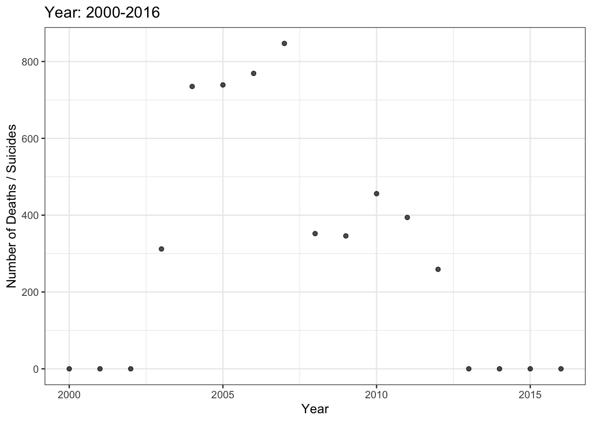
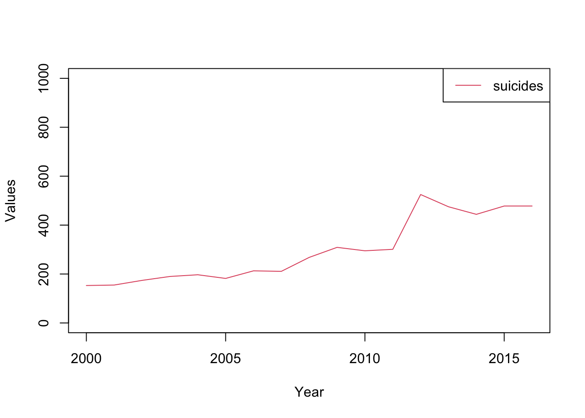
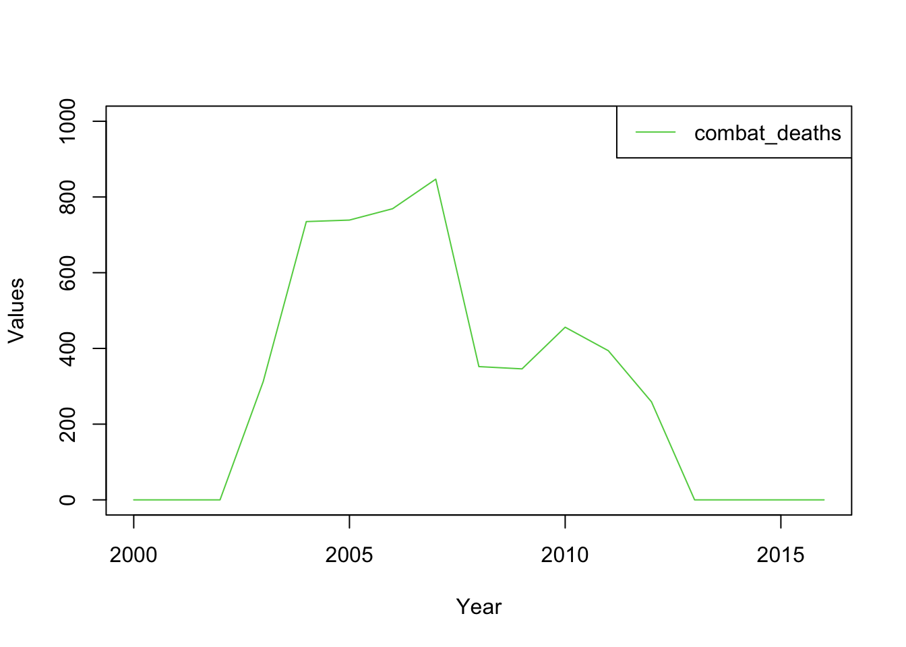
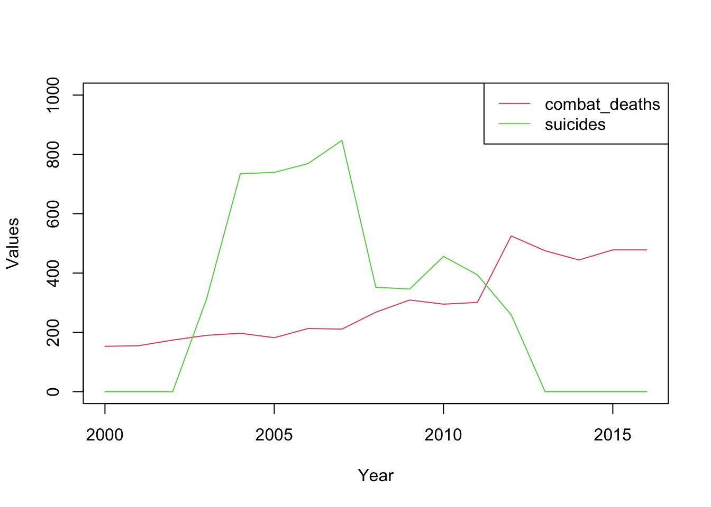

Portfolio 3- Military Combat Deaths Compared with Military Suicides
April 3, 2022
Picking up from Portfolio2, I first tried to carry over the code from the UN development animation. As I discovered, it was easier to find a code structure similar to the visual I want to create, rather than trying to reserve engineer the UN data visualization.
Install packages / libraries, and a code that I need for Mac.
r = getOption("repos")
r["CRAN"] = "http://cran.us.r-project.org"
options(repos = r)- First, installing packages / libraries. Note: When I had created the final visualization, then knitted the file, R gave me an error message about the install.packages, so I removed this command from the knitted version: ``{r Packages} install.packages(c(‘gapminder’,‘ggplot2’,‘gganimate’,‘gifski’, ‘tidyr’, ‘ggrepel’))
```r
library(gganimate)## Loading required package: ggplot2library(ggplot2)
library(gifski)
library(tidyr)
library(ggrepel)
theme_set(theme_bw())- Next, let’s make our data set. The best data source on this subject I could track down, that provided both suicides and combat deaths, was an a report from a U.S. Army military staff college. Ivey, Mark W. “Service Member Suicide and Readiness: An Analysis,” (2017). This report contained a graph, which itself cited to two separate reports. Therefore, the data below is second-hand and needs to be confirmed. However, I proceed with the following figures for demonstration purposes:
MilStats <- data.frame(suicides = c(153, 155, 174, 190, 197, 182, 213, 211, 268, 309, 295, 301, 525, 475, 444, 478, 478),
combat_deaths = c(0, 0, 0, 312, 735, 739, 769, 847, 352, 346, 456, 394, 259, 0, 0, 0, 0),
year = c(2000, 2001, 2002, 2003, 2004, 2005, 2006, 2007, 2008, 2009, 2010, 2011, 2012, 2013, 2014, 2015, 2016))- Now, save the dataset as csv:
library(readr)
write_csv(MilStats, "~/Documents/GitHub/Portfolio3-Mil_Combat_Data/MilStatsExcelTest.csv")- Let’s take a look at our static, non-animated plot
ggplot(data = MilStats, aes(x= year, y = combat_deaths, suicides)) +
geom_point(alpha = 0.7, show.legend = FALSE) +
labs(title = 'Year: 2000-2016', x = 'Year', y = 'Number of Deaths / Suicides')
It was at this point that I realized I was going to need to search for a code that more closely matched exactly what I was trying to depict. Joachim Schork, the founder of the wonderful educational platform for programming tutorials, has many straightforward, accessible codes to suit a beginner’s needs. https://statisticsglobe.com/draw-multiple-time-series-in-same-plot-in-r
From this point forward, I used the code found at the Statistics Globe link above.
- Moving on, let’s enter one variable at a time, starting with suicides.
plot(MilStats$year, # Draw first time series
MilStats$suicides,
type = "l",
col = 2,
ylim = c(0, 1000),
xlab = "Year",
ylab = "Values")
legend("topright", # Add legend to plot
c("suicides"),
lty = 1,
col = 2:4)
Next, let’s plot our second variable, combat deaths, with a different color.
plot(MilStats$year, # Draw second time series
MilStats$combat_deaths,
type = "l",
col = 3,
ylim = c(0, 1000),
xlab = "Year",
ylab = "Values")
legend("topright", # Add legend to plot
c("combat_deaths"),
lty = 1,
col = 3:4)
Next, we combine the two.
plot(MilStats$year,
MilStats$suicides,
type = "l",
col = 2,
ylim = c(0, 1000),
xlab = "Year",
ylab = "Values")
lines(MilStats$year,
MilStats$combat_deaths,
type = "l",
col = 3)
legend("topright",
c("combat_deaths", "suicides"),
lty = 1,
col = 2:3)
- Finally, here was my attempted code for animating:
``{r Animate} plot(data=MilStats\(year, MilStats\)suicides, type = “l”, col
= 2, ylim = c(0, 1000), xlab = “Year”, ylab = “Values”)
lines(MilStats\(year, MilStats\)combat_deaths, type = “l”,
col = 3) legend(“topright”,
c(“combat_deaths”, “suicides”), lty = 1, col = 2:3) labs(title = ‘Year:
{frame_time}’, x = ‘Year’, y = ‘Deaths due to Combat and Suicide’) +
transition_time(year) + ease_aes(‘linear’) animate(MilStats)
This gave me the error "animation of data.frame objects not supported"
7) So, I hunted for a different code. Dutch data scientist Joαchim Goedhαrt has a terrific script that provides explanations for his code:
https://github.com/JoachimGoedhart/Animate-Labeled-TimeSeries
I edited my Excel file by hand, so that the relationship between my Excel formatting and my code would match Joαchim Goedhαrt's code structure. This made for an incredibly easy transition. Lesson learned: finding the right code can be harder than making the code run with your unique data. Never quit!
I read my new Excel doc into a dataframe
```r
library(readr)
dfMilStatsTest <- read.csv("~/Documents/GitHub/Portfolio3-Mil_Combat_Data/MilStatsExcel.csv")- Next, for the coup-de-main: the animation code (all comments following # are fully credited to Mr. Goedhαrt)
ggplot(dfMilStatsTest, aes(Time, Value, group = Object, color = Object)) +
geom_line(size=1) +
geom_point(size = 2) +
geom_label_repel(aes(x = Time, y=Value, label = Object, fill = Object), hjust = 0, direction = "y", nudge_x = 20,
fontface = 'bold',
color = 'white', size=6,
segment.color = 'grey50',
segment.size = 0.5) +
transition_reveal(Time) 
Even after successfully creating the animation, when I knitted, the
code above gave me an error in Line 133, where the # comment is. So I
have deleted those comments in the code and pasted them below.
{r Code with # comments} #Define the aesthetics for the plot; x=Time, y=Value and each object is grouped and given a unique color ggplot(MilStatsExcel, aes(Time, Value, group = Object, color = Object)) + geom_line(size=1) + #Show a dot for the new datapoint that is added in a new frame (works well in the animation) geom_point(size = 2) + #Add labels, geom_label_repel from the ggrepel package is used to avoid overlap between the labels geom_label_repel(aes(x = Time, y=Value, label = Object, fill = Object), hjust = 0, direction = "y", nudge_x = 20, fontface = 'bold', color = 'white', size=6, segment.color = 'grey50', segment.size = 0.5) + #This is where the magic happens transition_reveal(Time)
- Last, remember to save plot to your file!
ggsave('MilStats.png', width=8, height=8)That did not work, so I just saved manually!